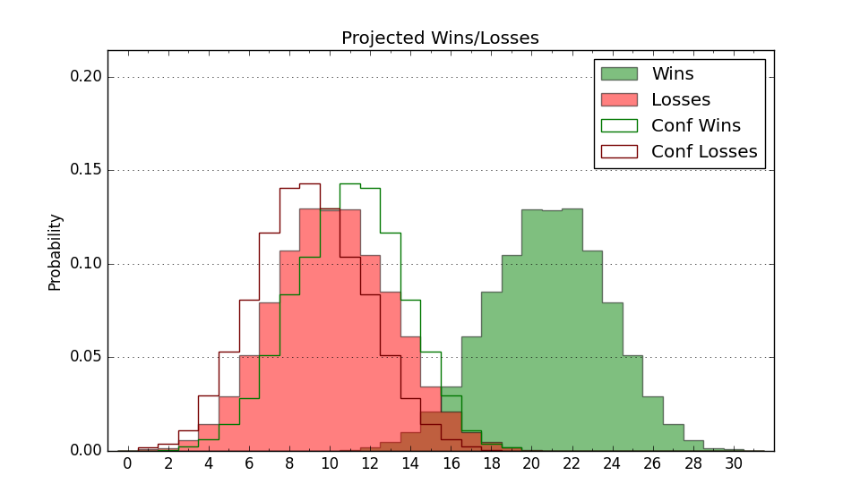

| Home | Game Probabilities | Conferences | Preseason Predictions | Odds Charts | NCAA Tournament |
| City: | Madison, Wisconsin | |
| Conference: | Big Ten (1st)
| |
| Record: | 0-0 (Conf) 8-0 (Overall) | |
| Ratings: | Comp.: 20.5 (35th) Net: 23.1 (33rd) Off: 119.3 (23rd) Def: 96.1 (64th) SoR: 91.5 (7th) |
| Remaining | ||||||
|---|---|---|---|---|---|---|
| Date | Opponent | Win Prob | Pred. | |||
| 12/3 | Michigan (50) | 72.0% | W 81-75 | |||
| 12/7 | @ Marquette (9) | 20.6% | L 73-82 | |||
| 12/10 | @ Illinois (18) | 25.2% | L 76-84 | |||
| 12/14 | (N) Butler (59) | 62.2% | W 78-74 | |||
| 12/22 | Detroit (304) | 98.1% | W 87-60 | |||
| 1/3 | Iowa (52) | 72.2% | W 84-77 | |||
| 1/6 | @ Rutgers (68) | 55.0% | W 77-76 | |||
| 1/10 | Minnesota (109) | 89.7% | W 74-60 | |||
| 1/14 | Ohio St. (16) | 50.8% | W 76-75 | |||
| 1/18 | @ USC (78) | 61.0% | W 76-73 | |||
| 1/21 | @ UCLA (20) | 26.7% | L 65-72 | |||
| 1/26 | Nebraska (37) | 65.3% | W 77-72 | |||
| 1/29 | @ Maryland (25) | 30.8% | L 69-75 | |||
| 2/1 | @ Northwestern (51) | 43.2% | L 69-71 | |||
| 2/4 | Indiana (46) | 70.4% | W 82-76 | |||
| 2/8 | @ Iowa (52) | 43.2% | L 79-81 | |||
| 2/15 | @ Purdue (19) | 26.3% | L 71-78 | |||
| 2/18 | Illinois (18) | 53.5% | W 80-79 | |||
| 2/22 | Oregon (23) | 59.3% | W 78-75 | |||
| 2/25 | Washington (83) | 84.7% | W 82-69 | |||
| 3/2 | @ Michigan St. (32) | 34.5% | L 70-75 | |||
| 3/5 | @ Minnesota (109) | 71.9% | W 70-64 | |||
| 3/8 | Penn St. (45) | 70.3% | W 83-76 | |||
| Previous | Game Score | |||||
| Date | Opponent | Win Prob | Result | Off | Def | Net |
| 11/4 | Holy Cross (305) | 98.1% | W 85-61 | -12.0 | -0.2 | -12.2 |
| 11/7 | Montana St. (132) | 92.4% | W 79-67 | -3.9 | -3.2 | -7.1 |
| 11/10 | Appalachian St. (200) | 95.3% | W 87-56 | 2.6 | 12.0 | 14.7 |
| 11/15 | Arizona (21) | 55.6% | W 103-88 | 17.7 | 7.2 | 24.9 |
| 11/18 | UT Rio Grande Valley (165) | 93.7% | W 87-84 | 2.6 | -24.3 | -21.6 |
| 11/22 | (N) UCF (79) | 74.6% | W 86-70 | -0.2 | 9.0 | 8.7 |
| 11/24 | (N) Pittsburgh (7) | 25.3% | W 81-75 | 13.7 | 6.1 | 19.8 |
| 11/30 | Chicago St. (357) | 99.3% | W 74-53 | -17.0 | -4.4 | -21.3 |
| Stats & Trends | |||||
|---|---|---|---|---|---|
| Current | Day | Week | Month | Season | |
| Composite | 20.5 | +0.3 | -0.6 | +4.7 | +4.7 |
| Comp Rank | 35 | +1 | -7 | +11 | +11 |
| Net Efficiency | 23.1 | +0.5 | -1.9 | -- | -- |
| Net Rank | 33 | +4 | -8 | -- | -- |
| Off Efficiency | 119.3 | +0.6 | -3.4 | -- | -- |
| Off Rank | 23 | +4 | -9 | -- | -- |
| Def Efficiency | 96.1 | -0.2 | +1.4 | -- | -- |
| Def Rank | 64 | -- | +32 | -- | -- |
| SoS Rank | 205 | +4 | -59 | -- | -- |
| Exp. Wins | 20.8 | +0.1 | -0.9 | +3.8 | +3.8 |
| Exp. Conf Wins | 11.0 | +0.1 | -0.8 | +1.4 | +1.4 |
| Conf Champ Prob | 6.7 | +0.3 | -6.0 | +3.2 | +3.2 |

| Advanced Stats | ||
|---|---|---|
| Stat | Value | Rank |
| Off Eff FG % | 0.565 | 48 |
| Off Ast Ratio | 0.168 | 62 |
| Off ORB% | 0.235 | 285 |
| Off TO Rate | 0.115 | 19 |
| Off FT Ratio | 0.451 | 33 |
| Def Eff FG % | 0.455 | 58 |
| Def Ast Ratio | 0.107 | 20 |
| Def ORB% | 0.245 | 77 |
| Def TO Rate | 0.152 | 167 |
| Def FT Ratio | 0.301 | 112 |